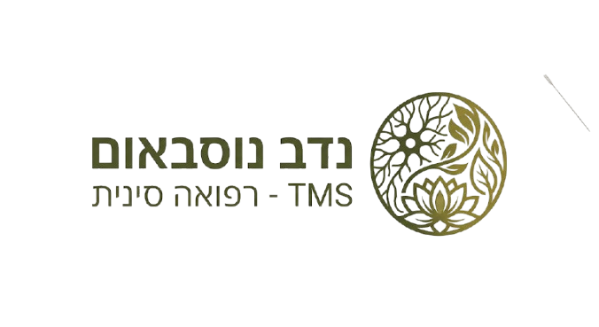
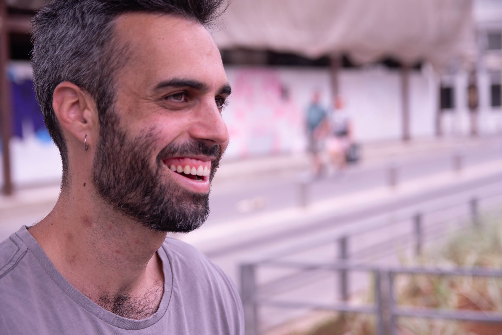

כאב כרוני הוא לא גזירת גורל. שילוב מדויק של חיווט עצבי מחדש (TMS) ורפואה סינית, עוזר למוח ולגוף להפסיק לייצר כאב ולחזור לחיים מלאים.
לתיאום שיחת ייעוץ
אם אתם מזדהים עם המשפטים הבאים, הגיע הזמן לחשב מסלול מחדש.
הכאב נמשך מעל 3-6 חודשים, גם כשהפציעה המקורית הייתה אמורה להחלים ממזמן.
הרופא שלל מחלה מסוכנת, הבדיקות (MRI/CT) תקינות או מראות שינויים ניווניים רגילים לגיל.
אתם מתוסכלים כי ניסיתם הכל: כדורים, זריקות, דיקור, כירופרקטיקה – וכלום לא מחזיק מעמד.
הכאב שלכם "נודד", משנה עוצמות, ולפעמים מושפע מלחץ, סטרס או תקופות עמוסות בחיים.
שלוש שנים לא יכולתי לשבת. שלוש שנים של חיפושים, טיפולים יקרים, ייאוש ותחושה שהגוף שלי פשוט "שבור".
נקודת המפנה הייתה כשנחשפתי למדע מאחורי תסמונת ה-TMS. הבנתי שהרקמה שלי בריאה לחלוטין, אבל המוח שלי נכנס למצב של "אזעקת שווא" ולמד לייצר תגובת כאב חזקה כדי להגן עליי ממתח רגשי ועומס.
ברגע שהבנתי את המנגנון ולמדתי איך להרגיע את מערכת העצבים, הכאב פשוט נעלם. היום, המטרה שלי היא לקצר לכם את הדרך, ולהראות לכם איך אפשר להחזיר את הגוף לאיזון.
כל מה שרציתם לדעת על תהליך הריפוי
"הגעתי לנדב המדהים דרך אחי, מהיכרות קודמת שלהם. סבלתי שנים מכאבי ישיבה בעקבות ניתוח שעשיתי (שהצליח!) ולא הבנתי למה עוד כואב לי. האבחנה הרפואית שלי הייתה מעולה, בריא לגמרי. הגעתי סקפטי לגבי כל התחום הזה, בטח שלעולם לא התנסיתי בו. נדב מההתחלה היה כ"כ מקצועי, מסור, אכפתי ודואג. מקנה ידע, מתרגל ומלווה לאורך כל הדרך. לא האמנתי איך בתוך זמן כ"כ קצר ובתוך כמה מפגשים, הוא פשוט עזר לי להעלים את הכאב ולחזור לחיים שלי, מה שלא ראיתי קורה באופק הקרוב."
רועי"לנדב באתי אחרי תקופה שעשיתי עבודה עצמית אל מול הכאב. באתי אליו כדי שיעזור לי לשבור את מה שהרגיש כמו איזו תקרת זכוכית שאני לא מצליחה לעבור. אחרי תהליך משותף הרגשתי שהגבול נפרץ ויכולתי להיפרד מהכאב, זו אחת החוויות המעצימות והמשחררות שיש. הליווי של נדב היה רגיש, מדויק ומוכוון היטב, תוך מתן תחושת ביטחון שקטה. תודה על הליווי בתהליך משמעותי"
לידור"המון המון תודה על התהליך שעברת איתי, שלמרות שהיה קצר היה מאוד ממוקד ומועיל ממש שמחה שאני במקום אחר עכשיו וזה באמת מטורף!!"
נועההגישה לריפוי מכאב כרוני אינה קסם. היא מגובה במחקרים קליניים ומדעיים מובילים.
מחקר פורץ דרך שהוכיח כי טיפול המבוסס על חיווט מחדש של המוח (PRT) העלים לחלוטין, או כמעט לחלוטין, כאבי גב כרוניים בקרב 66% מהמטופלים, לעומת 20% בלבד בקבוצת הביקורת.
מעקבים קליניים ארוכי טווח אחרי אלפי מטופלים של ד"ר ג'ון סארנו הראו אחוזי הצלחה חסרי תקדים בריפוי כאבים כרוניים (גב, צוואר, פיברומיאלגיה) ללא התערבות כירופרקטית או רפואית, רק על ידי הבנת המנגנון העצבי.
מחקרי הדמיה מראים כי דיקור סיני משפיע ישירות על מערכת העצבים המרכזית, מפחית פעילות באזורי מוח הקשורים לכאב וסטרס, ומעודד מעבר אקטיבי ממצב הישרדותי (Fight or Flight) למצב של ריפוי.
שלחו לי הודעה בוואטסאפ ונבדוק יחד בשיחה קצרה האם אתם מתאימים לתהליך הריפוי בשיטת TMS
לתיאום שיחת ייעוץ בוואטסאפ